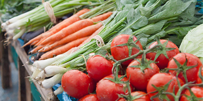
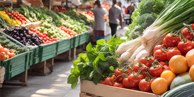
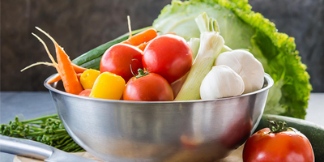
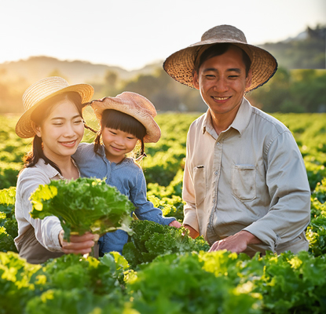
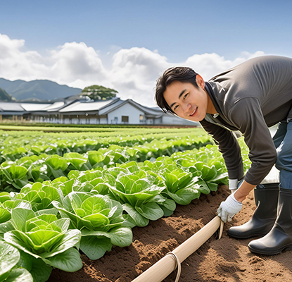

「スグ食べ」は、厳選したオーガニック農家さんの穫れたて野菜を販売しています。
食材から選べるのはもちろん、生産者からも選べます。
生産方法や生産地、それぞれ異なるこだわりで、お気に入りの農家さんを見つけてください。
最短で24時間以内に届く新鮮なオーガニック野菜宅配サービスです。
初回限定
お試しセット
1,280円
本当の意味での産地直送
「なるべく収穫したばかりの状態で、野菜を味わって欲しい。」スグ食べでは、既存の産地直送サービスのように箱詰め用の倉庫を介すことはありません。農家が収穫したその日に、お客様の元へ直送で野菜をお送りします。
安心安全な無農薬野菜
出品している生産者は、有機栽培もしくは自然栽培の農家のみ。全ての商品が無農薬・無化学肥料など、安全にこだわって生産された「オーガニック農作物」です。そのため、どの商品も安心してお買い求めいただけます。
たくさんの旬な野菜との出会い
年間数十種の野菜を作る生産者から、今が旬の多様な野菜が届きます。食べチョク では生産者ごとに商品が異なります。中には年間100種類もの多品種生産をしている生産者も。旬な野菜はもちろん、珍しい野菜とも出会えます。
自信があるから、是非食べてもらいたい
こんな農家さんが登録しています

グリーンフィールド（青森県） 高橋洋二
「グリーンフィールド」では栽培期間中に農薬・化学肥料を一切使用せず、年間約100種類の野菜と米、卵を生産しています。堆肥・肥料もすべて手作りし、有機質のものを使用しています。

潤緑農園（神奈川県） 伊藤潤一
「潤緑農園」では農薬や除草剤は一切使用せず、一つ一つのお野菜を丁寧に栽培しています。お日様の光をたくさん浴びて育ったお野菜は、葉や皮まで余すことなく食べることができます。
安心安全なお野菜を、ご堪能ください
旬なお野菜を存分に楽しんでください
おかげさまで感謝のお声をいただいています
鮮度が抜群に違います。
通常の産直サービスは、一度倉庫などに野菜を集め、そこで箱詰め作業をして配送しています。
この仕組みでは、お客様が商品を受け取る時には収穫してから3,4日が経過しています。
スグ食べでは、箱詰め作業を農家さんにお願いすることにより、
最短で収穫当日に商品を受け取ることができます
無農薬にこだわる、オーガニック農家さんのみが登録しています。
有機栽培や自然栽培などの環境に配慮した農法で生産するには、
通常以上に費用も手間もかかります。
そんな中でも、「安心な野菜を食べて欲しい」という強い思いを持って、
こだわって野菜を作っている農家さんがいます。
そういった、厳選されたオーガニック農家さんのみが登録しているため、安心してお買い物を楽しんでいただけます。
自信があるから、是非食べてもらいたい